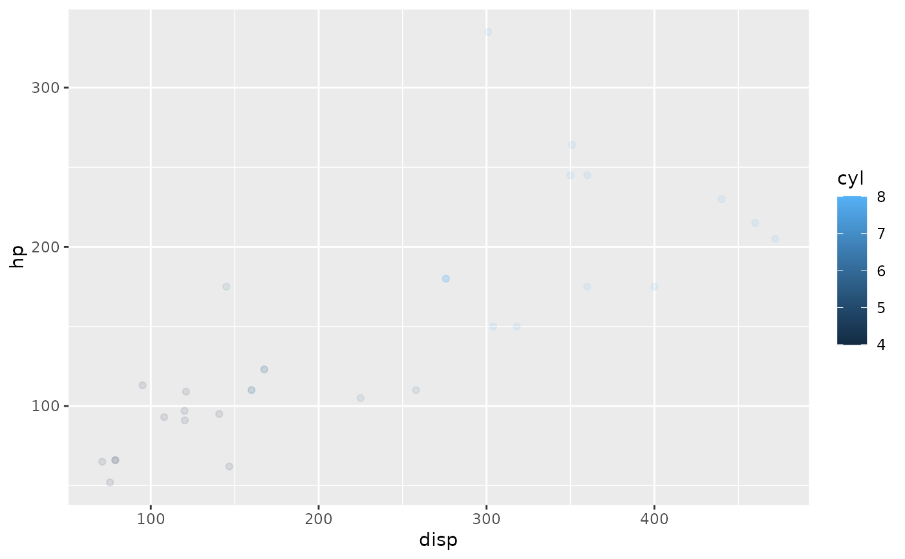

Saves graphs in *.webp image format.
webpea(
filename,
plot = NULL,
path_return = TRUE,
quality = 75,
ggsave = TRUE,
silent = FALSE,
...
)Filename to save the webp image to.
The plot to be saved.
Boolean, whether the absolute output path should be returned. This allows to wrap the function in another function that works with the returned image. See vignette for details. By default true.
Integer between 1 and 100. Specifies output quality for webp format. See magick documentation for details. Defaults to 75, as does magick's webp implementation.
Not yet in use.
Whether a file path should be returned or not. Defaults to TRUE.
Arguments to be passed to either ggplot::ggsave() or magick::image_graph(), depending on the value of the ggsave parameter.
Filename or path to the saved webp image.
# save last plot with default ggsave settings
ggplot2::ggplot(mtcars) +
ggplot2::aes(disp, hp, color = cyl) +
ggplot2::geom_point(alpha = 0.1)

webpea(tempfile("plot", fileext = ".webp"))
#> [1] "/tmp/Rtmpzv1fyi/plot17ffa66a9a6.webp"
# save specific plot with optional ggsave paramaters and in higher-than-default quality
p1 <- ggplot2::ggplot(mtcars) +
ggplot2::aes(disp, hp, color = cyl) +
ggplot2::geom_point(alpha = 0.4)
webpea(
tempfile("plot", fileext = ".webp"),
plot = p1,
width = 16,
height = 9,
quality = 90
)
#> [1] "/tmp/Rtmpzv1fyi/plot17ffb096826.webp"
if (FALSE) {
# using {magick} graphics device
# draw basic plot
p_draw <- ggplot2::ggplot(mtcars) +
ggplot2::aes(disp, hp, color = as.factor(cyl)) +
ggplot2::geom_point(alpha = 0.7)
webpea(
tempfile("plot", fileext = ".webp"),
plot = p_draw,
ggsave = FALSE, # this switches to the {magick} graphics device
width = 1920,
height = 1080,
res = 326,
quality = 42
)
}